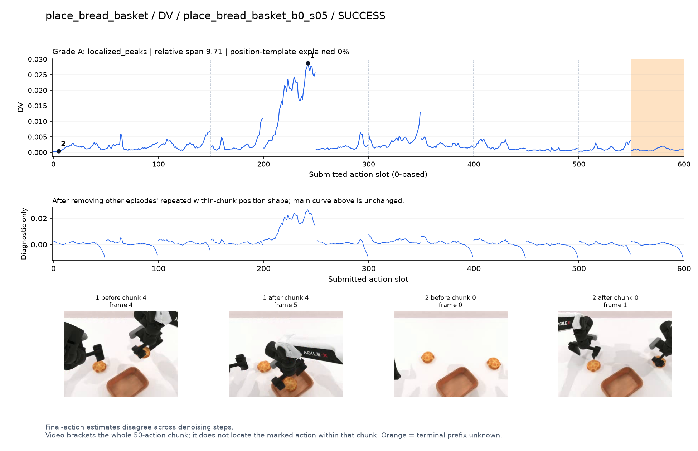
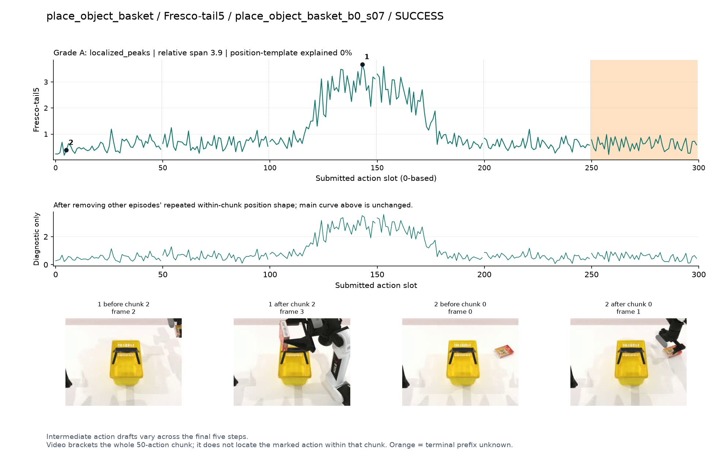
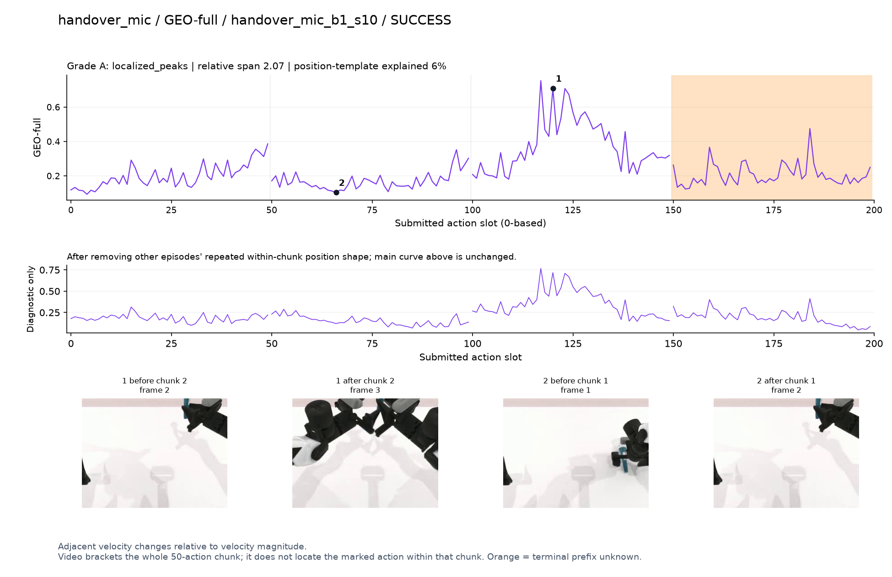
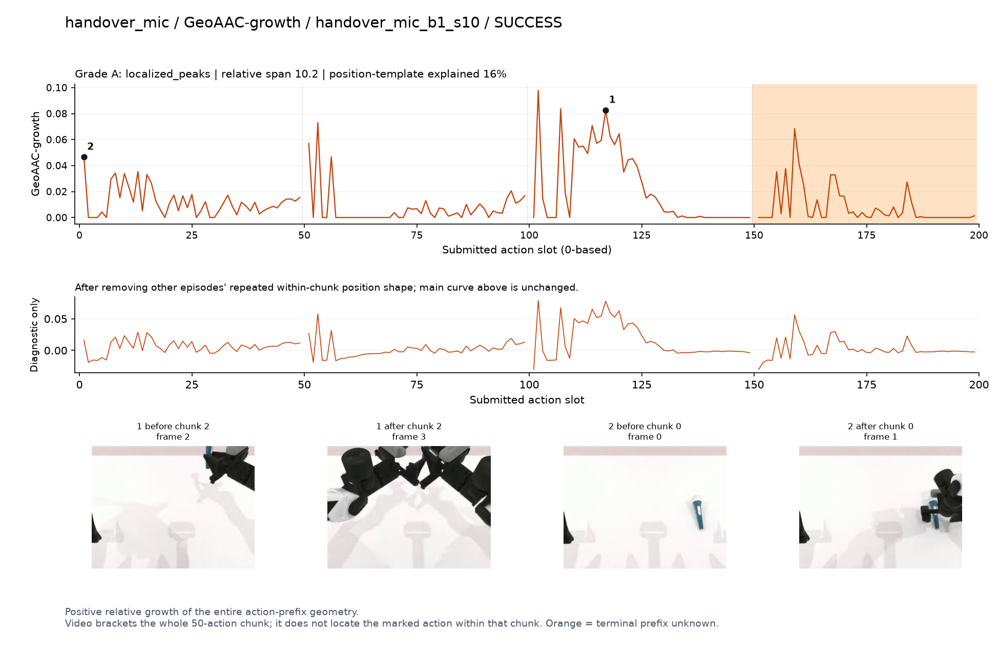
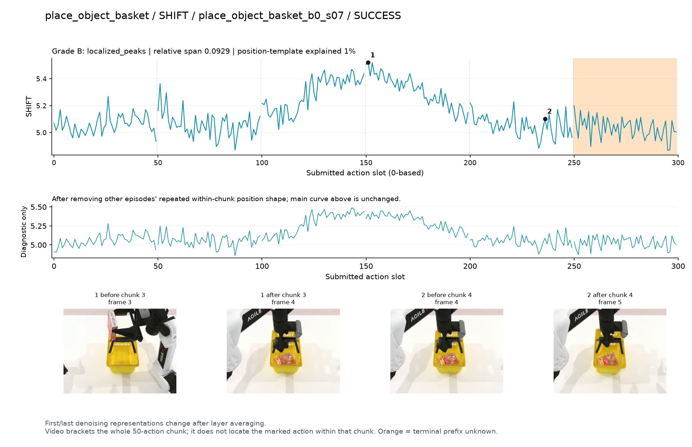
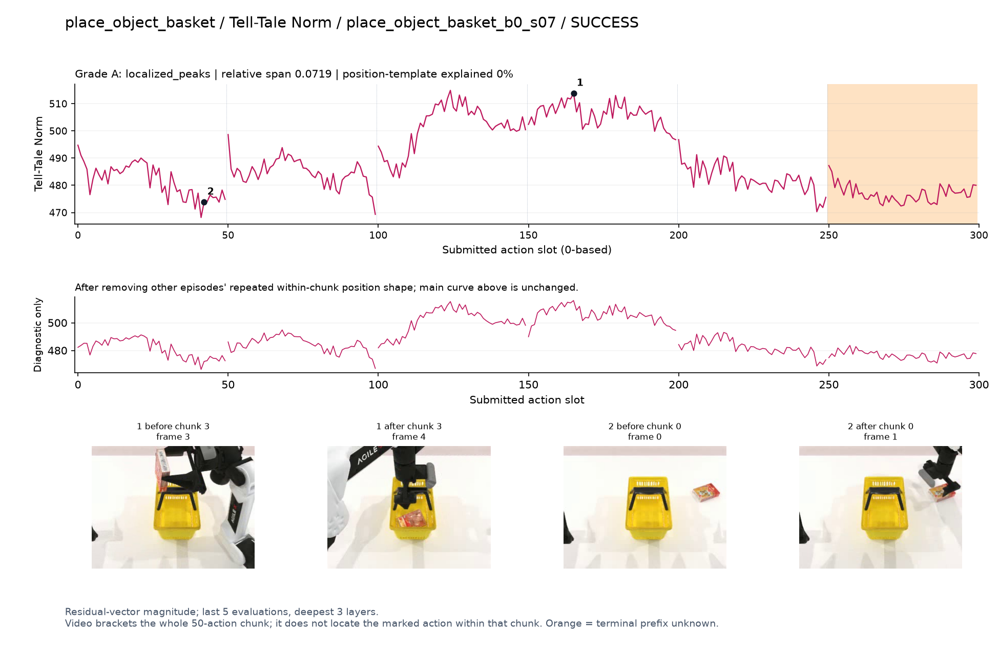
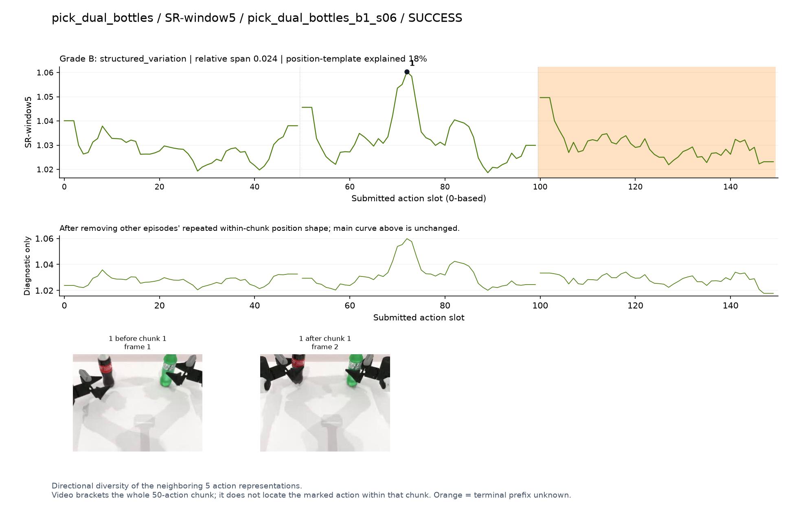
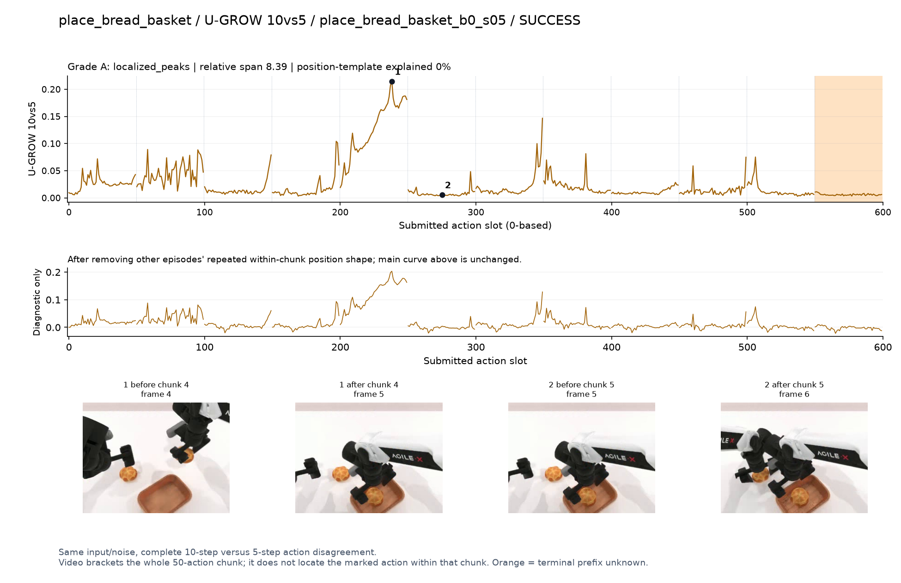
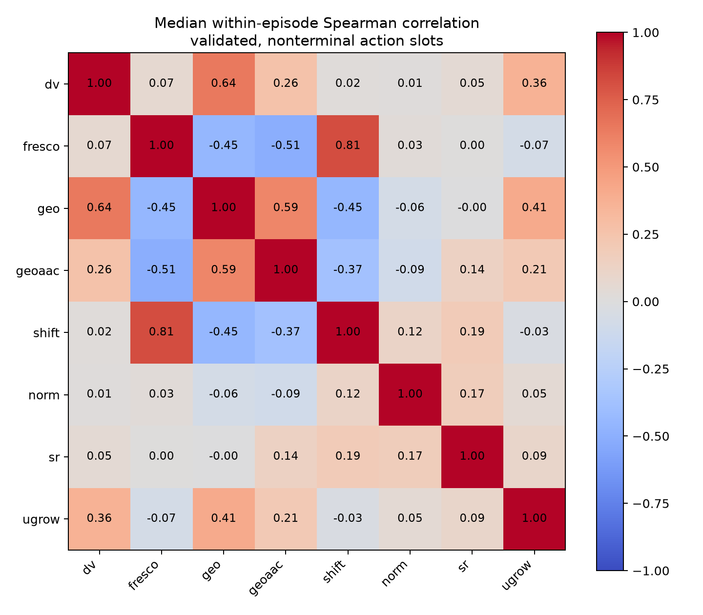
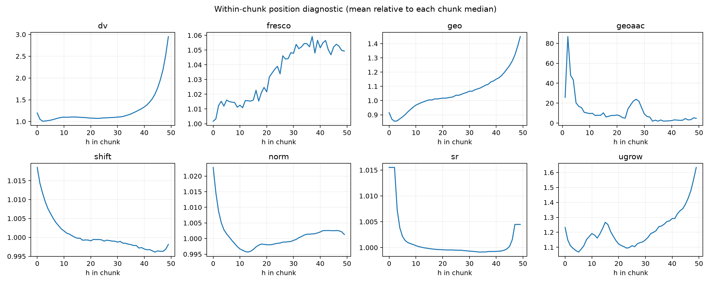

结果均在深圳1。主图是逐动作原始值；帧只包围整个chunk。形状分数不等于语义或训练收益。
全部50任务 · 完整复核记录 · 400项总表 · 计算与限制
优先候选：q4持面包移入篮子时单个主高区，同轨迹GEO/U-GROW也响应。

阶段候选但混杂强：q2/q3存在清楚宽峰，和物体入篮同时发生，仍主要测路径长度。

候选：q2两手相遇段出现主峰，q1搬运段较低。

阶段候选：q2交接动作前缀增长较大，需保留前缀含义。

阶段候选但混杂强：与Fresco同轨迹入篮时宽高区，不足以证明是语义难度。

优先阶段候选：q2/q3持物越过篮口并放入时宽高区，之后回落。

候选：q1中间提瓶附近局部峰，较少依赖边界。

优先候选：与DV同轨迹q4移入篮子高区。


